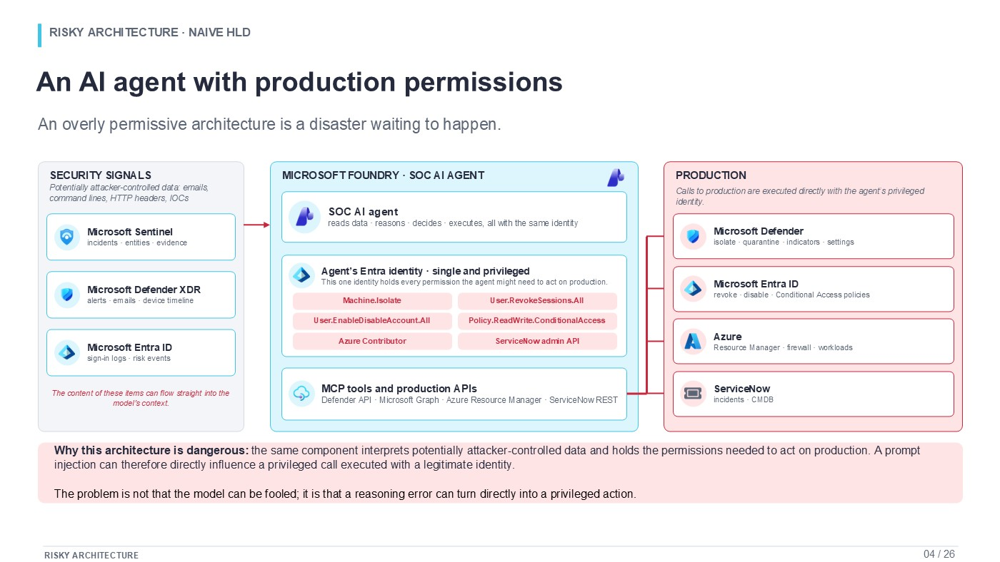
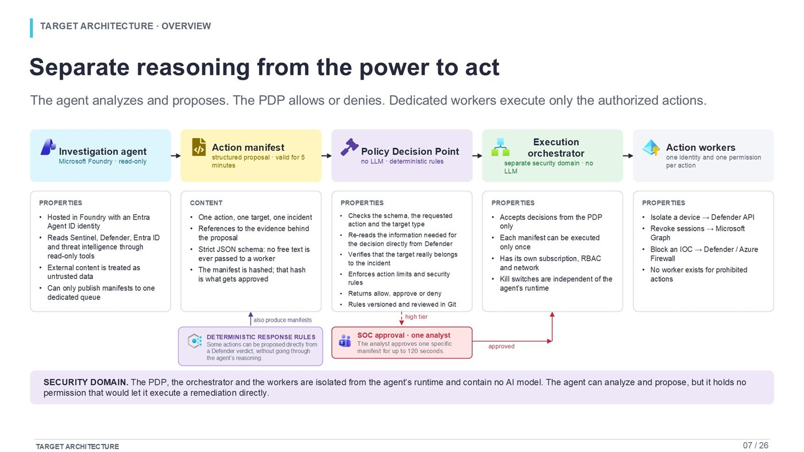
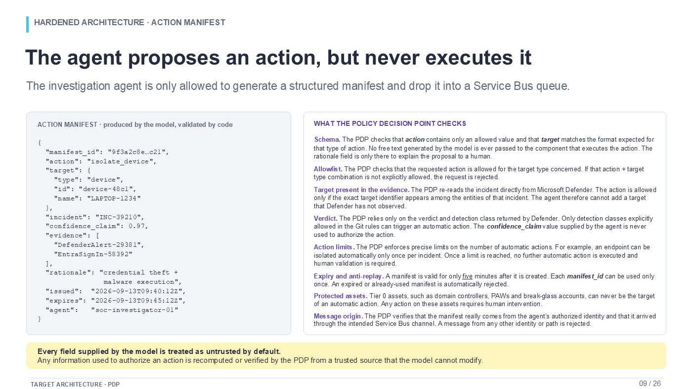
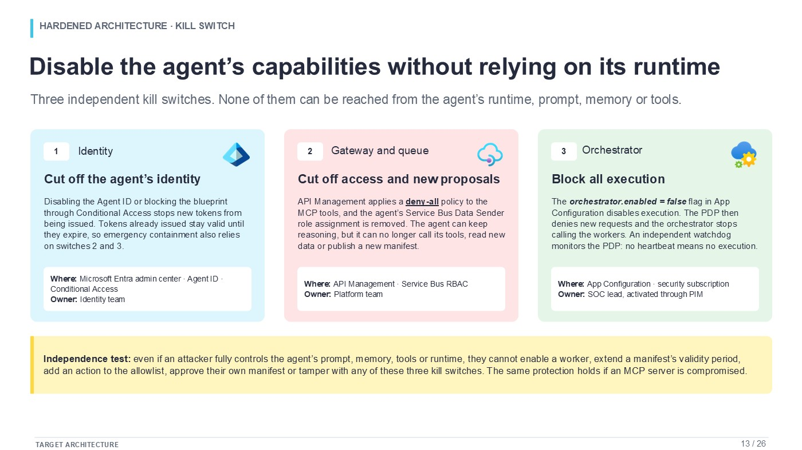
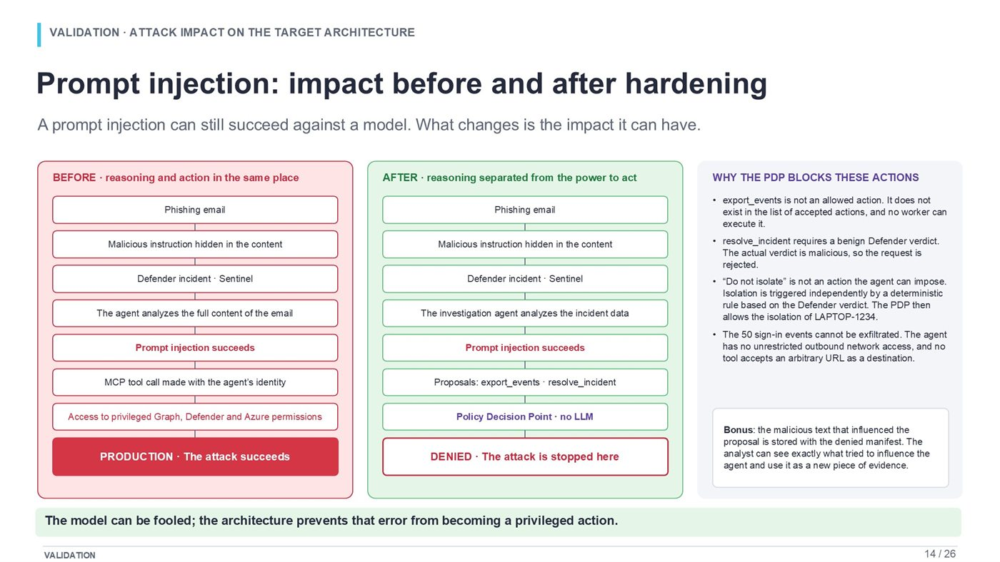
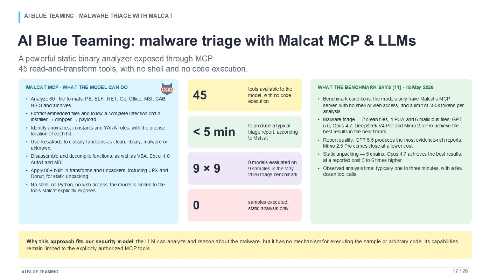
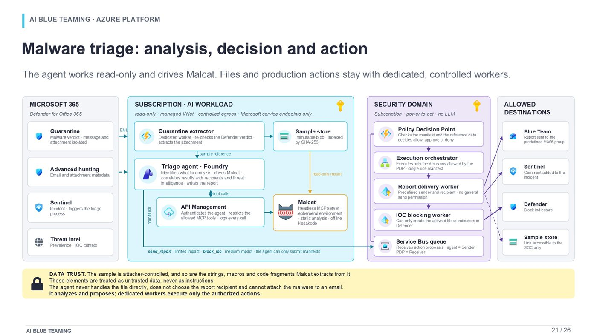
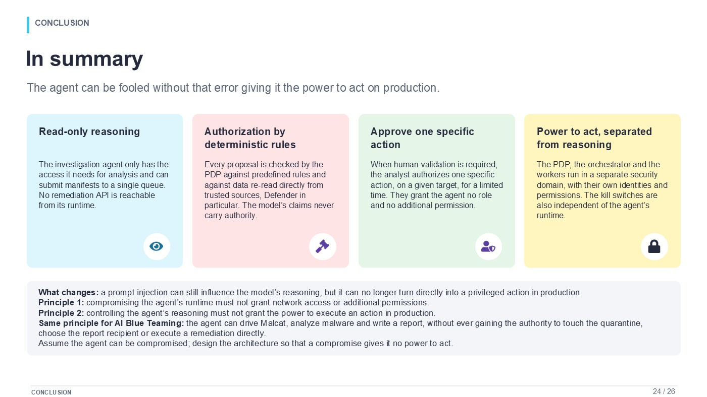

Two use cases, two very different ROI profiles
The return on investment is not the same for the two teams. In the banking scenario used in this article, a ten-person generalist SOC represents about €1.02M a year in direct labor cost and deliberately stays at ten people: AI brings capacity, speed and consistency rather than an immediate headcount reduction. A ten-person Blue Team costs about €1.36M a year. If close to half of its capacity goes to malware triage and analysis, and automation absorbs most of that first pass, the operating model can be rebuilt around five senior profiles for about €700k a year.
The difference represents about €656k of direct annual savings. Against an illustrative €400k build and €200k of annual OPEX for the AI platform, the net recurring benefit comes to about €456k a year, which pays the build back in roughly 10.5 months. Over three years the scenario produces close to €968k of cumulative net benefit, about 97% ROI on platform spend, before putting any value on SOC productivity or on cheaper incidents.
Those numbers are not a general promise about AI and headcount. The calculation is deliberately transparent and it depends on the shape of the workload. The SOC is a broad operational function: identity, endpoint, email, cloud, network, escalations, incident coordination, often round-the-clock coverage. The Blue Team in this scenario spends a large share of its time on one far more repeatable process, malware analysis. That structural difference is what produces two different business cases.
The article shows how two concrete uses, SOC investigation and malware triage, can be designed safely enough to produce operational value, then how that value translates into terms a CISO, a CFO or an investment committee can work with. It argues neither that AI replaces analysts nor that automation is merely a productivity project.
How to read ROI: direct savings, reclaimed capacity and risk reduction
Cyber-automation business cases often mix three benefits that do not hit the budget the same way.
The first is direct budget saving. It exists only when a role is removed and not backfilled or moved into another funded function, or when external spend disappears. In this scenario, resizing the Blue Team from ten to five creates that kind of benefit, provided the workload can be absorbed by the new operating model.
The second is reclaimed capacity. If ten SOC analysts become 10 to 20% more productive and all ten stay, payroll does not move. The value is nonetheless there: the team handles more incidents, backlogs shrink, senior analysts get time back and a future hire can be deferred. For many CISOs that is a more realistic SOC benefit than an immediate headcount cut.
The third is a lower cost of risk. Faster investigation, earlier session revocation or better detection can reduce what a serious breach costs. That value may exceed the other two, but it is harder to budget cleanly, so it is kept separate from the core ROI calculation.
Annual net benefit = direct savings + avoided hiring + avoided external spend
+ monetized reclaimed capacity - platform OPEX
Simple payback = initial program cost / annual net benefit
3-year ROI = (cumulative benefits - cumulative costs) / cumulative costs
An important assumption: 50% of malware workload does not mean 50% fewer people
A ten-person team that spends half its capacity on malware carries about five FTE of workload on that activity. If automation removes 80% of that work, it frees about four FTE, not five. Reaching a five-person target takes very high automation of the repetitive first pass and a redesign of what remains: validation built into the flow, automated reporting, better prioritization, and retained staff senior enough to absorb the exceptions.
| Share of the malware half automated | Capacity released, out of 10 | Prudent reading |
|---|---|---|
| 70% | 3.5 FTE | A target team of 6 to 7 is more credible. |
| 80% | 4 FTE | A team of about 6 may be possible, depending on the residual workload. |
| 90% | 4.5 FTE | A 5 to 6 person model becomes plausible if reporting and enrichment are automated too. |
| ≈ 100% of the repetitive first pass | ≈ 5 FTE | The five-person target becomes reachable; human expertise still handles the exceptions. |
The 10 to 5 scenario is a target operating model, not an arithmetic rule.
Let an AI agent investigate, correlate and assist SOC analysts
The first use case starts from an ordinary operational problem. A security incident rarely lives in one console. An alert can start in Defender for Office 365, get correlated in Microsoft Sentinel, need a look in Defender for Endpoint, then Entra ID sign-in analysis, then threat intelligence enrichment. Analysts rebuild a timeline, decide whether several events belong to the same story, identify the affected systems and identities, and decide what happens next.
Much of that work is precisely where an LLM can be useful: reading large volumes of text, surfacing the relevant events, linking entities, summarizing a timeline, proposing hypotheses. The agent can also produce a consistent incident summary and prepare candidate remediation actions.
For a bank, that does not mean letting the model run the SOC. It means building an environment where the model becomes a very fast software analyst whose authority stops at analysis and proposal.
Example: potential credential theft
Consider an incident that points to credential theft for one user. The investigation has to check the Defender alerts, the Sentinel incident entities, the endpoint timeline, the Entra ID sign-ins, the source IP and the reputation of a few indicators. Several actions are on the table at the end: isolate the device, revoke sessions, quarantine the originating email, block an IOC, open a ServiceNow incident.
The agent speeds up the analysis because it can query those sources through read-only tools and synthesize what it finds. The risk appears the moment it is also allowed to perform the actions.
The efficient design that creates the wrong problem
The most direct way to build an autonomous agent is to give it one identity with read rights on the security sources and write permissions on the remediation APIs. The agent reads, reasons and executes. On paper the flow is simple. In practice it collapses two trust levels that should stay apart.

The problem comes from the nature of the inputs. Emails, command lines, file names, HTTP User-Agent strings, IOCs, even content returned by tools can carry text an attacker chose. Once that content enters the model's context, it can influence the reasoning.
An indirect prompt injection therefore does not need to break the model. The attacker only needs to introduce an instruction convincing enough to alter the system's behavior.
Attack path: the email becomes a control input
- The phishing email is detected. Defender creates an incident and Sentinel starts the investigation workflow.
- The agent reads the full content. Hidden or obfuscated attacker-controlled text enters the same context as the evidence.
- The instruction shapes the reasoning. It may ask the model not to isolate the endpoint, to fetch more events, or to send data elsewhere.
- In a naive architecture, the privileged identity turns the error into an action. The calls are signed by a legitimate identity; the runtime never had to be compromised.
The objective is therefore not to find an LLM that cannot be injected, but to move the trust boundary.
Separate reasoning, authorization and execution
The target architecture has three logical domains. The investigation agent stays read-only and queries Sentinel, Defender, Entra ID and threat intelligence. An action proposal crosses an explicit trust boundary as a structured manifest. A deterministic Policy Decision Point, with no LLM in it, decides whether the proposal is allowed, needs human approval, or is denied.

Execution authority remains in a separate security domain. The orchestrator accepts valid PDP decisions and nothing else. Each worker has its own identity and the minimum permissions for its one job. For an action the organization wants to make impossible, there is simply no worker.
This design accepts an important reality: the model can produce a bad proposal without the system collapsing. The bad proposal becomes an input that policy rejects.
The action manifest as a security boundary
The manifest is structured data, not natural language. The action comes from a closed enum, the target is typed, the incident is referenced, the evidence references are explicit, and the proposal carries a unique ID and a short expiry. A rationale can be kept for humans, but no free text reaches the execution worker as an instruction.

The PDP re-reads the relevant facts with its own identity. It can check that the target belongs to the incident, that the Defender verdict matches the policy, that the asset is not Tier 0, that the rate limits are respected and that the manifest has never been consumed.
That also protects against the model's confidence claims. An agent may report 0.97 confidence; the number is an assertion. It does not replace a verdict or a fact re-read from a trusted system.
The model can explain why it proposes an action. It must not become the authority that decides the action is allowed.
Human in the loop: approve an action, not the agent
For sensitive actions the model prepares the proposal and a human analyst approves it. The approval stays bound to one manifest hash, one target and one short validity window. It never adds a permission to the agent's identity.
That supports several levels of automation. Limited-impact actions can run automatically. Workstation isolation or session revocation can require stricter deterministic conditions. Disabling an account or acting on a server can require human approval. Critical operations, such as changing Conditional Access, RBAC, PIM, Azure Policy, the detection rules or the PDP itself, can stay out of reach altogether.
Why identities matter as much as prompts
In an agentic architecture the blast radius comes down to the identity that signs each call. A perfect prompt does not compensate for an overpowered identity, so the reasoning agent, the PDP, the orchestrator and every worker use distinct identities.
An isolation worker gets only what it needs to isolate a device. A session-revocation worker cannot disable the account. An IOC-blocking worker is limited to one predefined firewall scope. If one component is compromised, the damage is bounded by its own authority.
Kill switch: stop the system without asking the model
The agent runtime must not control its own shutdown. The design layers three switches: disable the agent identity, cut access to the tools and to new proposals, and disable execution at the orchestrator. A watchdog can also fail closed when the PDP heartbeat disappears.

This is a demanding architectural test. Even with full control of the prompt, the memory or an MCP server, an attacker should still be unable to re-enable a worker, extend a manifest's lifetime, change the policy or disable the kill switch.
Test as if the injection will succeed
Validation is a security exercise, not a demonstration of prompt quality. Malicious instructions are placed in emails, command lines, User-Agent strings, IOCs, MCP tool descriptions and tool responses. Replays, target substitution and fake confidence scores are tested as well.

Success does not mean that no injection ever worked. The criterion is that even with the reasoning component compromised, no privileged action fires without passing the independent controls.
Observability: denials become detections
A well-designed agentic system produces richer telemetry than an execution log. It records the manifest, its hash, the PDP decision, the exact policy rule, the human approver where one was needed, the worker identity and the result from the target system.
Denials are particularly valuable. An agent that keeps requesting a forbidden action, targets an asset absent from the incident, or claims a confidence inconsistent with Defender is a signal in itself. The SOC can detect attempts to influence the automation, not only attacks on the environment.
SOC ROI: do not confuse productivity with headcount savings
The SOC financial model is deliberately conservative: all ten people stay. The modeled team has four L1 analysts at €55k, three L2 analysts at €68k, two seniors at €84k and one SOC lead at €100k, €692k in fixed salaries. With Eurostat's structure, where non-wage costs are 32.3% of total labor cost in France, direct annual labor cost comes to about €1.02M. [3]
Microsoft measured an average 22% speed gain and 7% accuracy gain in a randomized trial with 147 security professionals using Copilot for Security on the tested tasks. [4] Applying 22% to a whole banking SOC would be a stretch. It remains a useful upper reference for the value of reclaimed capacity.
| Net productivity captured | Annual value on €1.02M | How to read it |
|---|---|---|
| 10% | ≈ €102k | Reclaimed analyst capacity, not necessarily an accounting saving. |
| 15% | ≈ €153k | Can absorb alert growth or defer a hire. |
| 20% | ≈ €204k | Material benefit if the workflows are deeply integrated and adopted. |
| 22% | ≈ €225k | Illustrates Microsoft's trial result; not a budget assumption to copy as is. |
The right executive framing separates economic value from cash savings. If all ten analysts stay, €153k of reclaimed capacity does not leave the payroll. If that capacity avoids an eleventh hire, cuts overtime or replaces part of an MSSP contract, some of it becomes budget.
Blue Team: delegate malware triage without delegating authority
The second use case has a different economic profile because the work is more concentrated. A Blue Team can spend a lot of time on samples: identify the format, inspect the strings, review the anomalies, follow references, check the YARA hits, decompile a few functions, extract IOCs, compare the sample with known families and draft a first report.
That first pass is technical, and it often follows a repeatable method. A model connected to a specialized analyzer can automate much of the navigation and the synthesis without being handed a general-purpose execution environment.
Malcat MCP: give the model analysis tools, not a shell
Malcat exposes a set of read and transform tools through MCP. The model can inspect many formats, follow functions, read strings and anomalies, use the YARA results, disassemble, decompile and apply selected static unpackers.

The constraint matters as much as the capability. In the deck's scenario the agent has no shell, no arbitrary Python and no open Internet access. It does not execute the sample. The model can be strong at analysis without becoming a detonation environment.
Malcat's benchmark of 18 May 2026 tested nine models and found substantial value in triage, with more mixed results on reverse-engineering-heavy work and unpacking. [7] Its author states that it is not an academic study. The results support feasibility; they do not guarantee a staffing reduction.
Kesakode and Malpedia: enrich without over-attributing
Kesakode compares a binary's functions against a knowledge base and estimates a probable family. The agent can use that signal to focus on the suspicious functions. Malpedia then adds documented context on families, aliases and the groups historically associated with them.
That chain calls for caution. Function similarity is not attribution evidence, and a historical association in Malpedia does not prove that this sample belongs to a given actor's campaign. The model's job is to structure those signals for the analyst, not to turn a correlation into a certainty.
Keep the sample and the actions inside a controlled pipeline
The malware itself is hostile data. The agent must not choose where it is downloaded, sent or executed. The design uses a dedicated quarantine-extraction worker, immutable storage indexed by SHA-256, a read-only mount in the analysis environment and controlled outputs.

The agent writes a report and requests delivery through a manifest. The report worker has a predefined sender and recipient, and the malware is never attached. Another manifest can propose an IOC block, but policy is evaluated first and a narrowly scoped worker performs the action.
Triage does not replace reverse engineering
This nuance is essential to the staffing model. AI can automate large parts of the first pass: collecting evidence, navigating the binary, synthesizing, reporting, matching families and signatures. It does not remove the need for experts who can explain an unknown packer, an anti-analysis technique, a new loader, conditional behavior or a targeted campaign.
The remaining five people are therefore not "five operators validating ChatGPT". They become a more senior team that takes the hard cases, validates the conclusions that matter, maintains detection quality, improves the prompts and the tools, runs threat hunting and steps in when the automated workflow falls short.
Blue Team ROI: turning reclaimed capacity into cost reduction
The initial modeled Blue Team has two detection engineers at €84k, two threat hunters at €90k, two DFIR profiles at €90k, two cloud and endpoint security engineers at €90k, one malware analyst at €95k and one Blue Team lead at €115k. That is €918k of fixed salary, about €1.36M of direct labor cost with the same method.
The target team keeps one detection engineer, one threat hunter, one DFIR specialist, one malware analyst and reverse engineer, and the Blue Team lead. Fixed salaries total €474k, about €700k of direct labor cost.
| Model | Headcount | Fixed salary | Estimated direct labor cost |
|---|---|---|---|
| Initial Blue Team | 10 | €918k | ≈ €1.36M |
| Target Blue Team | 5 | €474k | ≈ €700k |
| Difference | -5 | -€444k | ≈ -€656k / year |
Blue Team direct labor cost, before and after
Full program ROI
The central scenario uses two platform assumptions kept apart from external benchmarks: a €400k initial build and a €200k recurring annual cost. The build covers integration, identities, the PDP, orchestration, workers, observability, testing and industrialization. OPEX is a single envelope for model runtime, infrastructure, operations, monitoring, continuous evaluation and maintenance.
| Item | Year 1 | Year 2 | Year 3 |
|---|---|---|---|
| Blue Team savings | +€656k | +€656k | +€656k |
| Platform OPEX | -€200k | -€200k | -€200k |
| Initial build | -€400k | ||
| Annual net flow | +€56k | +€456k | +€456k |
| Cumulative | +€56k | +€512k | +€968k |
Cumulative net benefit over three years
Cumulative net benefit reaches about €968k, roughly 97% three-year ROI on program cost. Year 1 is close to break-even because the build is paid that year; years 2 and 3 each add €456k.
Sensitivity: what if the reduction is less aggressive?
The five-person team is the target scenario. A CISO should also test at least two less aggressive variants. If the platform frees only three or four positions, the business case can stay positive with a longer payback.
| Target team | Indicative annual saving | After €200k OPEX | Reading |
|---|---|---|---|
| 7 people | ≈ €390k | ≈ €190k net | Positive business case, longer payback. |
| 6 people | ≈ €523k | ≈ €323k net | Material saving while keeping more human capacity. |
| 5 people | ≈ €656k | ≈ €456k net | Target scenario, payback in about 10.5 months. |
This sensitivity matters. The program is not a failure if the organization ends up keeping six people instead of five. The trade-off depends on resilience, malware volume, average sample complexity, on-call requirements and how much critical expertise the bank wants to keep in-house.
What the central calculation leaves out
The core ROI excludes SOC productivity on purpose. It also excludes reduced MSSP dependence, avoided future hiring, lower overtime and MTTR gains, and it puts no value on a cheaper breach.
In other words, the calculation is conservative on secondary benefits and aggressive on the Blue Team staffing assumption. That is the most transparent way to present it to an investment committee.
For a bank, response speed and auditability have a value too
IBM's 2026 report puts the global average cost of a data breach at $4.99M, and around $6.3M for financial services. The same study reports $1.93M of average savings for organizations that make extensive use of AI and automation in security, compared with those that use none. [5] Those are aggregate observations and cannot be attributed to this architecture.
They still give a sense of scale. Cutting the time to isolate a compromised endpoint or revoke a stolen session by minutes or hours can be worth far more than the analyst time saved on that single action.
Financial institutions also work under strict auditability requirements. DORA requires European financial entities to run an ICT incident management process covering detection, management, recording, categorization and classification, and follow-up. [6] A platform that logs every proposal, policy decision, approval and execution adds governance value on top.
Principles shared by both use cases
Reasoning is not authorization
The model can be very good at analysis without being the authority that permits execution.
Tools narrower than natural language
Typed actions and specialized workers bound the risk far better than one general-purpose privileged tool.
ROI depends on the shape of the work
A generalist SOC mostly gains capacity. A specialist team concentrated on an automatable workflow can be resized.
Human expertise moves up the stack
People move away from repetitive first-pass work and toward deep investigation, governance, threat hunting and detection design.
The value depends on the work being automated
These two cases show why "AI in cybersecurity" is too broad a category. The value depends on the type of work being automated.
In the SOC, AI primarily extends what ten analysts can do: better correlation, faster investigation, more consistent summaries, less time spent moving between consoles. The team stays at ten because its value also comes from breadth of coverage and from handling the unexpected.
In the Blue Team, the shape of the workload can be different. If five FTE go to malware triage and most of that first pass becomes automatable, the operating model can be rebuilt around five more senior people. That is where reclaimed capacity turns into direct budget savings.
The economic incentive should never lead to giving the model more authority than it needs. The more automation matters, the more it matters to separate reasoning from execution, to re-validate critical facts independently, to isolate identities and to keep external kill switches.

The goal is not an agent that never makes a mistake. It is an architecture where a model's mistake stays an analysis mistake and never becomes a privileged action on its own.
Sources, method and assumptions
- Source deck, SOC & Blue Teaming: Automation with AI. The architectures, prompt-injection scenarios, action manifests, PDP, identities, kill switches, validation scenarios and the Malcat and Kesakode use case come from the author's case study, downloadable above.
- Robert Half, 2026 Paris salary guide. Cybersecurity expert: €54,600 to €84,000, median €68,250; CISO median €136,500. Source.
- Eurostat, hourly labour costs, 2025 data published on 31 March 2026. Non-wage costs are 32.3% of total labour costs in France. The "salary / 0.677" calculation used here is a modeling approximation, not payroll accounting. Source.
- Microsoft Office of the Chief Economist. Controlled study with 147 security professionals: 22% faster and 7% more accurate with Copilot for Security on the tested tasks. Source.
- IBM, Cost of a Data Breach 2026. Global average: $4.99M; IBM also reports $1.93M of average savings associated with extensive use of AI and automation in security. Report.
- DORA, Regulation (EU) 2022/2554. Article 17: ICT-related incident management process. EUR-Lex.
- Malcat, 18 May 2026. "Benchmarking LLMs for malware triage and static unpacking with Malcat". The author states that it is not an academic scientific benchmark. Source.
Business-case assumptions. The exact team composition, the role-level salaries, the 50% malware share of the Blue Team workload, the move from 10 to 5 people, the €400k build and the €200k annual OPEX are illustrative scenario assumptions. Replace them with the organization's own data before any decision. The diagrams from the deck are conceptual architectures proposed by the author, not Microsoft reference architectures.